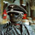

|
 |
Itt egy kis könnyed olvasnivaló hétvégére
az UFO-korról. Vagyis inkább kór. A tengeren túl a hívek szomorúan vették
tudomásul, hogy hamisnak bizonyult a nemrégiben még szenzációsnak kikiáltott felvétel, melyen az
akkor még álló WTC tornyai mellett készítettek egy helikopterrel majdnem összeütközõ
csészealjról. Pedig már odáig mentek egyesek, hogy a tornyok ledõlését is a gonosz
idegenek számlájára írták.
Aztán tavaly
jött egy volt kanadai miniszterelnök helyettes, egyben védelmi miniszter, és
kijelentette, hogy a globális klímaváltozás elleni
leghatékonyabb fellépés szerinte az idegen civilizációk által használt technológiák
alkalmazása lenne. A 83 éves Paul Hellyer az 1960-as években töltött be vezetõ
kormányzati tisztséget. Aztán egyre többen lettek, akik hasonló véleményen voltak: volt
Pentagon-alkalmazottak, magasrangú, katonai és titkosügynöki múlttal rendelkezõ
emberek. És nem az elhülyülés szélén álló 83 éves fazonok.
Azok a dokumentumfilmek, amelyek az általuk elmondott eseményeket rögzítik,
a YouTube és a Google videóportáljainak leglátogatottabb oldalai közé tartoznak, tehát igen
nagy az érdeklõdés irántuk, hiszen hiteles(nek tûnõ) emberek, történeteirõl van
szó. A csöndet 1997-ben Philip Corso törte meg, aki az
amerikai szárazföldi erõk ezredeseként a hatvanas években a Pentagon kutatás-fejlesztési
részlegét felügyelte, és többek között az 1947-es roswelli UFO lezuhanását követõen
került kapcsolatba az idegen civilizációk technológiájával. Könyve, a The Day After Roswell azonnali bestseller
lett. Corso olyan dolgokat állít, amelyek vagy kivételesen jó
képzelõerõt, vagy az általa elmondottak valóságát kell jelentsék. Állítása szerint a lezuhant
csészealjban például a pilóta szerves részét képezte a navigációs rendszernek, vagyis
egy mesterséges intelligencia volt. Egy humanoid formába klónozott szuperszámítógép,
de nem élõlény, ami egyben magyarázatot adhat a hosszú ûrbeli utazásra vagy a jármû
fantasztikus navigációs képességeire.
Corso
szerint a hadsereg felhasználta és a mai napig is felhasználja az idegen civilizációk
technológiáit. Például õ már akkor találkozott alak- vagy más tulajdonságának
megváltoztatásra képes anyaggal, amikor a nanotechnológiáról nem is hallottak. A
sugárfegyverekkel kapcsolatos kísérletek is az UFO technológiákból eredeztethetõ.
Corso ezredest követõen számos hitelesnek tûnõ ember fedte fel eddig
titokban tartott ismereteit. Az új mozgalom új szervezetet is létrehozott, és
megalakult az Exopolitics Institute, a hiteles, vagy annak tûnõ UFO történeteket pedig
a Disclosure Project dolgozza fel. A projekt
többek között olyan elhíresült eseményekre koncentrál, mint például az 1989-90-es
belgiumi „UFO áradat”, amit több tízezer ember, vadászpilóták,
légierõ-tábornokok és más hivatalos források, fényképek, filmfelvételek is
alátámasztanak, de megmagyarázni a mai napig nem tudták.
Egyesek szerint azonban nem is idegen
civilizációkkal van dolgunk, hanem titkos kísérletekrõl. A fejünk felett lebegõ UFO-kra
jellemzõ meghajtással már a hitleri Németország is próbálkozott, és Tim Venturának
köszönhetõen nem is olyan régóta
már fél
Amerika is ennek lázában él. A fiatalember saját garázsában építette meg kísérleti
modelljét (és publikálta a YouTube videoportálon), ami egy alumínium
fóliából készült háromszögre emlékeztet, amelynek a sarkain nagy feszültségû, de alacsony
erõsségû áramot bevezetve a szerkezet eddig nem ismert törvényeknek köszönhetõen,
állítólag az ionáramlásnak vagy a mindezidáig megmagyarázatlan Biefeld-Brown effektusnak
köszönhetõen a levegõbe emelkedik. Az kísérleti UFO-csodamasinát bárki otthon is megépítheti (a részletek
itt láthatók). Tim találmányát már a National Geographic
is bemutatta, s kísérleteit annyira
komolyan veszik, hogy a fejlesztés érdekében megalakult az American
Antigravity Inc vállalat. Itt van nektek egy videó, remélem, sokan nekiestek és Magyarország egén
temérdek UFO jelenik meg hamarosan. Talán UFO-nagyhatalom is lehetünk
egyszer...
| | vissza a fõoldalra |  |
| 1 2 3 4 5 6 7 | |  | | | | | | | | 

|
| | | | | | | | | | | | | | 1 2 3 4 5 6 7 |  |
|


túraszervezõ
túra-rss
mi ez?

legjobbak
legolvasottabbak
tartalomjegyzék
rss feed

AboryM
Caesar
Count Grishnackh
cscsabi
eürdüngh
Feki
GyalogKakukk
Ishukone
Kadzseszka
LACI1993
Mini
Muska
Rommel
Segi
Takezó
tommylee
vikcee
|
BlogGép 1.1 (C) 2007-2009 tomcat
nem adom
hülye kérdések elott olvasd el a faq-t
minden, a bombagyar.hu-n és aloldalain közölt tartalom újraközléséhez
a szerkesztõk írásos beleegyezése szükséges
az olvasói kommentárok és levelek nem feltétlenül a szerkesztõk véleményét tükrözik
házirend elolvasása